|

|
|
The Exhibition - a short
guide
The exhibition is divided into 7 sections, each of 2 or 4 cases:
The Natural World
The Birth of Archaeology
Art and Civilisation
Classifying the World
Ancient Scripts
Religion and Ritual
Trade and Discovery
Click thumbnails to view larger images
|
The
Natural World
Case 1: Plants Case 2: Animals and Shells Case 3: Rocks and
Minerals Case 4: Fossils
| 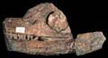 |
In the 18th century, the collections in the British
Museum were divided into ‘Natural and Artificial
Rarities’ – objects found in nature or made
by people. Only a few rooms had man-made objects but
case after case was filled with natural specimens. They
included Sloane’s herbarium – albums of
plants from around the world, all catalogued with a
string of Latin names by his friend, the botanist John
Ray.
In
1735, the Swedish botanist Carl Linnaeus revolutionised
the way plants, animals and other objects from the natural
world were named and classified by devising a much simpler
binomial (two-name) system. His pupil, Daniel Solander,
was a curator in the Museum and applied the system to
Sloane’s birds, animals, shells, minerals and
fossils. In 1768, he travelled with the wealthy young
gentleman Joseph Banks on Captain James Cook’s
first voyage to the Pacific and helped to catalogue
the exotic collections they gathered there.
Many
of these original specimens are included in the exhibition,
as well as a number of fossils. They include one of
the first dinosaurs ever found – an Ichthyosaur,
discovered by Mary Anning at Lyme Regis in 1821. By
1880 there were so many natural history specimens that
they needed a museum of their own – the Natural
History Museum in South Kensington.
Top
|
| 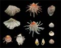 |
|
|
The
Birth of Archaeology
Case 5: Antiquaries Case 6: Archaeologists
| 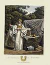 |
By
1828 antiquaries were a dying breed, replaced by specialist
historians and archaeologists. But for the previous
two hundred years they had collected books, manuscripts,
drawings and artefacts from the past, and travelled
the country studying ruins in order to learn more about
Britain’s early history. It was fairly easy to
learn about medieval times because more objects from
those times had survived, including religious artefacts,
armour, books and buildings. Antiquaries also began
to survey and map Roman and earlier sites, such as Stonehenge,
in a more scientific and systematic way and to learn
more about the earliest Britons. This knowledge, combined
with the new study of rock strata, led archaeologists
to question the accepted date of the world’s creation
– 4004 BC – calculated from readings of
the Bible.
Top
|
| 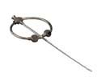 |
|
|
Art
and Civilisation
Case 7: The History of Art Case 8: The Origins of Art
Case 9: The Ancient Greek Ideal Case 10: Classical Revivals
| 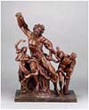 |
In
1824, Charles Townley’s famous collection of Greek
and Roman sculptures, acquired on his Grand Tours in
Italy, came to the British Museum. They joined the collections
of prints and drawings, gems, coins, bronzes, vases
and other classical antiquities that had come to the
Museum from fellow connoisseurs such as Sir William
Hamilton and Richard Payne Knight. These men studied
each other’s collections to learn about the ‘progress’
of art, from what they saw as its ‘primitive’
beginnings in early civilisations to what they considered
to be the height of artistic achievement – the
sculpture and architecture of classical Greece. This
became the standard against which to measure all art
and led, in 18th-century Britain, to a classical revival
in architecture and the decorative arts. Its influence
can be seen here in Wedgwood’s pottery and in
the Greek Revival style of the architecture of the room.
Top
|
| 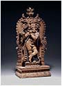 |
|
|
Classifying
the World
Case 11: King George III’s Library Case 12: The Revolution
in Science
Case 13: Understanding Greek Vases Case 14: Curiosity and Curiosities
| 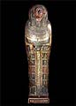 |
The
vast world of knowledge being gathered in the 18th century
had to be classified and organized so that it could
more easily understood and used. King George III’s
library of nearly 70,000 books (which this room was
designed to house) was encyclopaedic in its scope and
arranged by subject. The King loved medals and, as part
of his library, these came to the Museum with his coin
collection, all arranged by country and ruler to help
bring past history alive. He was also keenly interested
in the navy, navigation and scientific discoveries and
collected instruments and working models. In the early
part of the century, Sir Hans Sloane had collected unusual
or beautifully made instruments. His cabinets were filled
with objects that aroused curiosity and they were catalogued
and displayed in many different ways - by type, material,
date or purpose. The ambassador to Naples, Sir William
Hamilton, catalogued his vases so that they might tell
the history of Greek art. The beautiful illustrations
to his book inspired a wide variety of the decorative
arts in Britain.
Top
|
| 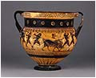 |
|
|
Ancient
Scripts
Case
15: The Search for Babylon Case 16: Hieroglyphs Case 17: Decipherment
Case 18: Languages and Translation
| 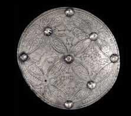 |
The search for knowledge about the past led to renewed
interest in deciphering the mysterious forms of Egyptian
hieroglyphs, the curious cuneiform inscriptions found
in the lands described in the Bible, and early forms
of Sanskrit in India. This increased scholarly activity
eventually led to ‘cracking their codes’
in the 19th century and thousands of years of history
were opened up to research. At the same time, translations
were made of important books written in languages
from distant lands, while nearer to home antiquaries
deciphered runes and other early forms of writing,
revealing more of our own history.
Top
|
|
|
Religion
and Ritual
Case
19: Gods Case 20: Magic, Mystery and Rite
| 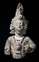 |
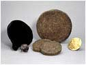 |
Christian mistrust of superstition and idols, rituals
and magic had led to ignorance about other religions
around the world. Scholars in the Enlightenment attempted
to dispel this ignorance by studying the ancient and
modern religions they encountered. They researched
rituals and cults in different cultures, collected
religious artefacts, grouped gods into families and
examined their attributes and functions, always searching
for similarities that might shed light on the origins
of the world’s religions.
Top
|
|
|
|
Trade
and Discovery
Case 21: The Americas Case 22: The Pacific Case 23: Asia
Case 24: Egypt and Africa
| 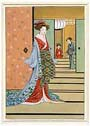 |
Sir
Hans Sloane’s collection included ceremonial and
every day objects representing customs and cultures
of people around the globe. They formed the beginnings
of an ethnographic collection that grew through the
century as men like Captain James Cook and Sir Joseph
Banks returned from voyages of trade and discovery to
Australia, New Zealand, Tahiti and other Pacific islands.
Others
were sent by the Admiralty to discover the Northwest
Passage through the Arctic or by the government to forge
or mend diplomatic relations. Meanwhile officials of
the East India and other great trading companies studied
the cultures of the people with whom they lived, collected
further artefacts and published illustrated accounts
that provided information about the lives and cultures
of people around the world.
Top |
| 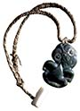 |
|
|
|